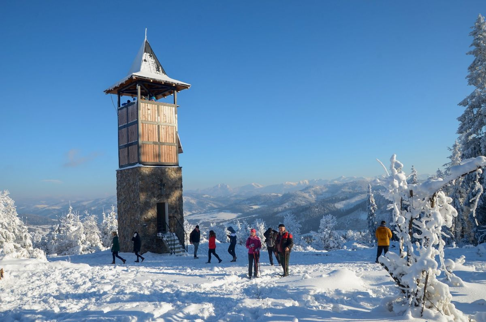

Rozhľadňa na Hladkom vrchu ponúka jedinečné panoramatické výhľady na Kysuce, okolité kopce a pri dobrej viditeľnosti aj na siluety Beskýd a Malej Fatry. Je ideálnym miestom na oddych, fotografovanie a vychutnanie si prírody z vtáčej perspektívy.

041/23 04 081
otazky@zborovnadbystricou.sk
Zdroj: https://www.zborovnadbystricou.sk/ https://www.google.com/maps